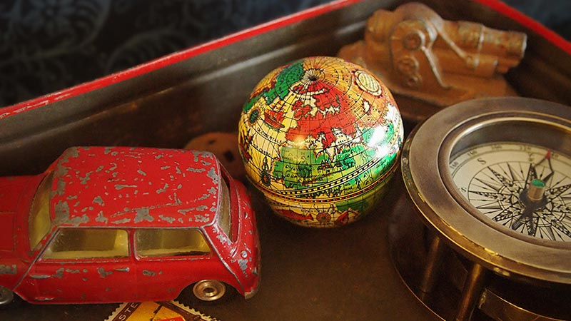
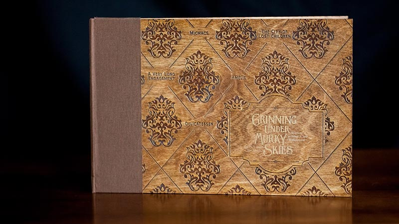

Grinning Under Murky Skies
Objective Create a film festival that centers around the work of a specific director. Identify a thematic connection for the films, and design a system of materials that expresses the theme and reflects the visual style of the director.
Concept Grinning Under Murky Skies is a film festival that features five films directed by Jean-Pierre Jeunet—Amélie, Delicatessen, The City of Lost Children, A Very Long Engagement and Micmacs. A theme in all of the films is that despite depressing circumstances, the protagonists manage to find happiness through their relationships with other characters.
Along with the film screenings, each day of the festival hosts an additional event for festival attendees. The first is a “Meat and Greet” with Jeunet, then a scavenger hunt, which is an allusion to the festival theme of searching for happiness. The festival wraps up with a happy hour at a French restaurant in honor of Jeunet’s home country.
Visuals To capture Jeunet’s quirky, somewhat macabre sense of humor and his old-fashioned, European aesthetic, the festival uses dark, rich, saturated colors. Four distinctive typefaces work well together—Clearface as a main font with unusual angles and peculiar details in a serif and sans serif, Carrosserie as an accent font that feels vintage French, and LHF Hensler as another accent font that is somewhat reminiscent of a circus.
Inspired by a scene in Amélie, photographs feature antique toys, tin boxes and little knickknacks that represent the treasured objects collected by a child. The images have vignettes, simple compositions and richly colored and patterned backgrounds, inspired by the Polaroid photography of Elizabeth Soule. Quirky, angled, geometric shapes and corner embellishments are used throughout the design system, and layouts reference scrapbooks with newspaper clippings and black photo corners.


Return to Top